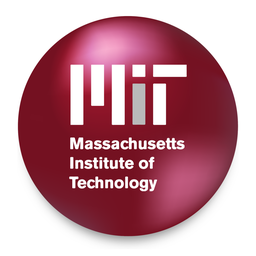
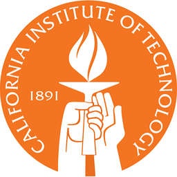

10 лучших университетов мира
Здесь 10 лучших университетов мира по рейтингу QS World University Rankings 2027 (опубликован 18 июня 2026). Данные взяты с официальных сайтов приёма (проверено в ноябре 2026). Другие рейтинги, например THE 2027, где первый — Оксфорд, расставляют вузы иначе.
Сроки, суммы и правила меняются каждый год. Перед подачей проверяйте официальный сайт университета.

1Массачусетский технологический институт (MIT)Кембридж, Массачусетс, США · Основан в 1861
QS 2027: №1
Как подать заявку
ПлатформаMIT application portal
Сбор за заявку$75
Сроки
Ранний раунд 01.11Обычный раунд 04.01
Тесты и требования
- SAT или ACT обязательны
- 2 письма учителей обязательны; письмо консультанта необязательно
- Educational Counselor может предложить собеседование; если его нет, это не влияет на заявку
Английский язык
- Настоятельно рекомендуется некоторым неносителям языка, но не обязателен для всех
Деньги и помощь
- Помощь основана на потребности; MIT заявляет, что покрывает 100% подтверждённой потребности. Заявка на помощь отдельная: 30.11 (ранний) или 15.02 (обычный)
Полезно знать
- Одна заявка на год поступления; при отказе в Early Action подать в Regular Action нельзя
 2Имперский колледж ЛондонаЛондон, Великобритания · Основан в 1907
2Имперский колледж ЛондонаЛондон, Великобритания · Основан в 1907
QS 2027: №2
Как подать заявку
ПлатформаUCAS
Тесты и требования
- Требования зависят от курса; смотрите свою страну на официальном сайте
Английский язык
- Уровень зависит от курса; результат IELTS действителен 2 года
Деньги и помощь
- Для набора 2027 есть стипендии Imperial Inspires; подробности на официальном сайте
 2Стэнфордский университетСтэнфорд, Калифорния, США · Основан в 1885
2Стэнфордский университетСтэнфорд, Калифорния, США · Основан в 1885
QS 2027: №2
Как подать заявку
ПлатформаCommon App
Сбор за заявку$100
Сроки
Ранний раунд 15.10 / 01.11Обычный раунд 05.12 / 05.01
Тесты и требования
- SAT или ACT обязательны
- 2 письма учителей, письмо консультанта и School Report
Английский язык
- Не обязателен, баллы можно указать самостоятельно; но свободное владение английским — обязательное условие
Деньги и помощь
- Для иностранцев не need-blind: запрос помощи учитывается при поступлении. Покрывает полную потребность всех принятых; стипендий за заслуги нет (кроме ограниченного числа спортивных)
Полезно знать
- Полугодовой транскрипт до 15.02; срок ответа 01.05
 4Оксфордский университетОксфорд, Великобритания · Преподавание примерно с 1096 года
4Оксфордский университетОксфорд, Великобритания · Преподавание примерно с 1096 года
QS 2027: №4
Как подать заявку
ПлатформаUCAS
Сроки
UCAS 15.10
Тесты и требования
- Тесты и собеседование зависят от курса; с отобранными кандидатами проводят интервью
Английский язык
- Рекомендуется IELTS Academic; IELTS Online и IELTS General не принимаются
Деньги и помощь
- Иностранный студент должен показать, как оплатит обучение и проживание, до подтверждения места; стоимость зависит от курса
Полезно знать
- Около 20 000 заявок на примерно 3 250 мест в год; 20% студентов бакалавриата — иностранцы
 5Гарвардский университетКембридж, Массачусетс, США · Основан в 1636
5Гарвардский университетКембридж, Массачусетс, США · Основан в 1636
QS 2027: №5
Как подать заявку
ПлатформаCommon App
Сбор за заявку$95
Сроки
Ранний раунд 01.11Обычный раунд 01.01
Тесты и требования
- SAT или ACT обязательны (в исключительных случаях — AP, IB или результаты национального экзамена)
Английский язык
- Не обязателен, но можно предоставить результат
Деньги и помощь
- Помощь одинакова для всех гражданств и основана на потребности; Harvard покрывает подтверждённую потребность. Решение о приёме не зависит от запроса помощи, в том числе для иностранцев
Полезно знать
- Баллы тестов можно указать самостоятельно; зачисленные подают официальные результаты
 6Кембриджский университетКембридж, Великобритания · Основан в 1209
6Кембриджский университетКембридж, Великобритания · Основан в 1209
QS 2027: №6
Как подать заявку
ПлатформаUCAS + My Cambridge Application
Сроки
UCAS 15.10.2026My Cambridge Application 22.10.2026Транскрипт (иностранные абитуриенты) 22.10.2026
Тесты и требования
- Для некоторых курсов нужен вступительный тест (UCAT, LNAT, ESAT, TMUA); регистрация может понадобиться до дедлайна UCAS
Английский язык
- IELTS Academic: обычно 7,5 в целом, как правило, не ниже 7,0 в каждом разделе
Деньги и помощь
- Стоимость зависит от курса и фиксирована на весь срок; приоритета тем, кто платит по иностранному тарифу, нет
Полезно знать
- Срок одинаков для иностранных и британских абитуриентов; отдельного раннего графика собеседований для иностранцев нет

7Калифорнийский технологический институт (Caltech)Пасадена, Калифорния, США · Основан в 1891
QS 2027: №7
Как подать заявку
ПлатформаCommon App / QuestBridge
Сроки
Ранний раунд 01.11.2026Обычный раунд 04.01.2027Срок ответа 01.05.2027
Тесты и требования
- SAT или ACT обязательны; результаты AP или IB, если сдавали
Английский язык
- Обязателен (если вы не учились на английском): IELTS 7 в целом и в каждом разделе или Duolingo 130 в целом и в каждом разделе
Деньги и помощь
- Для иностранцев need-aware: запрос помощи может повлиять на решение. Покрывает полную потребность принятых. Помощь нужно запросить при подаче заявки
Полезно знать
- Решения: в середине декабря (ранний) и в середине марта (обычный); срок ответа 01.05.2027
 8ETH ЦюрихЦюрих, Швейцария · Основан в 1855
8ETH ЦюрихЦюрих, Швейцария · Основан в 1855
QS 2027: №8
Как подать заявку
ПлатформаETH online application
Сроки
Срок подачи 31.03
Тесты и требования
- Для многих иностранных аттестатов нужно сдать вступительный экзамен ETH (зависит от аттестата)
Английский язык
- Требования к немецкому языку нужно выполнить к сроку подачи
Деньги и помощь
- С осени 2025 студенты с иностранным аттестатом платят CHF 2 190 за семестр (раньше CHF 730)
Полезно знать
- Учёба на бакалавриате начинается только с осеннего семестра
 8UCL (Университетский колледж Лондона)Лондон, Великобритания · Основан в 1826
8UCL (Университетский колледж Лондона)Лондон, Великобритания · Основан в 1826
QS 2027: №8
Как подать заявку
ПлатформаUCAS
Тесты и требования
- Предложения основаны на трёх A-level (стандартно от A*A*A до ABB, зависит от курса); аттестаты других стран проверяют на эквивалентность
Английский язык
- Есть 5 уровней — проверьте нужный на странице курса; IELTS One Skill Retake не принимается
Деньги и помощь
- Стоимость для иностранцев и стипендии — на официальном сайте; зависят от курса
Полезно знать
- На набор 2025 через UCAS поступило почти 91 000 заявок
 10Национальный университет Сингапура (NUS)Сингапур, Сингапур · Основан в 1905
10Национальный университет Сингапура (NUS)Сингапур, Сингапур · Основан в 1905
QS 2027: №10
Как подать заявку
ПлатформаNUS Applicant Portal
Сбор за заявкуS$20
Сроки
Период подачи (прошлый год) 03.12.2025 – 23.02.2026
Тесты и требования
- Результаты SAT, AP или ACT предоставляются, если есть; требования зависят от программы
Английский язык
- Предоставьте результат IELTS или TOEFL, если есть; для некоторых программ нужен высокий уровень
Деньги и помощь
- NUS International Undergraduate Scholarship: кандидатов рассматривают по заявке на поступление
Полезно знать
- Приём комплексный: учитываются успеваемость, интересы и способности